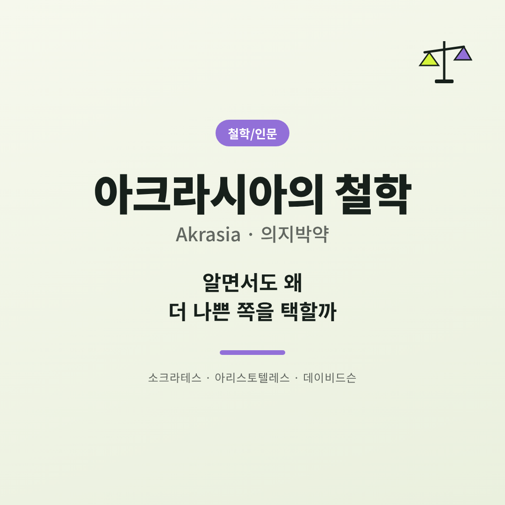
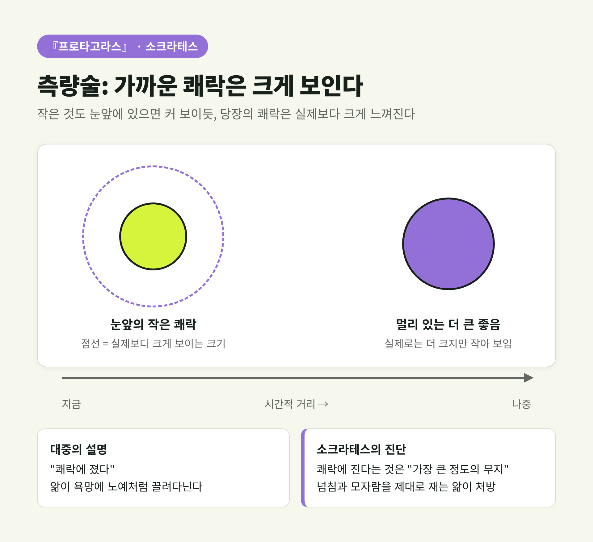
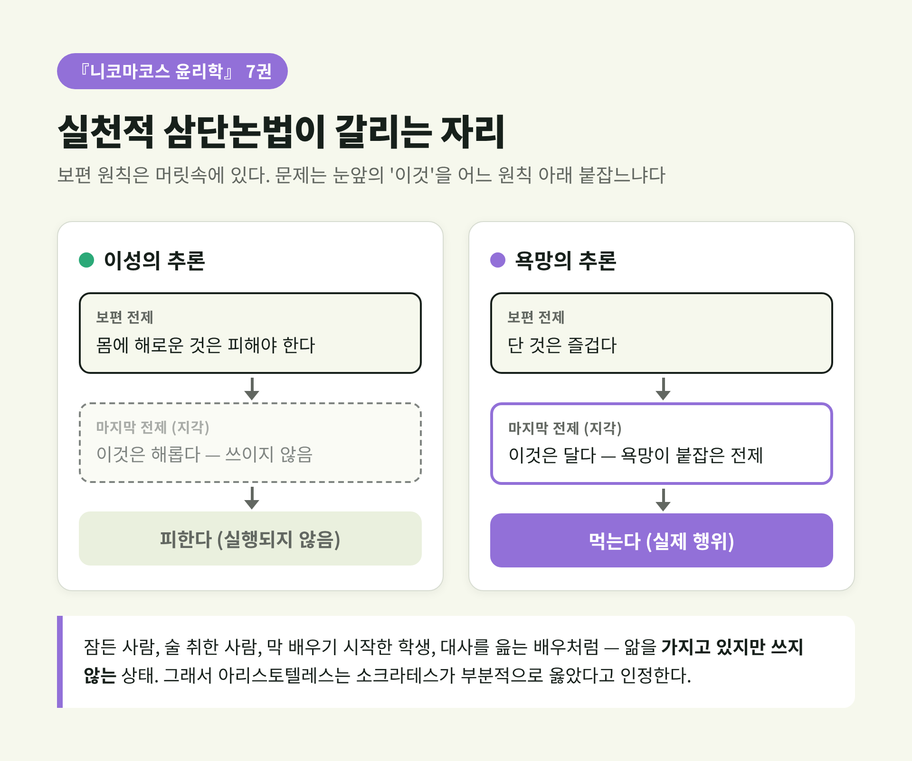
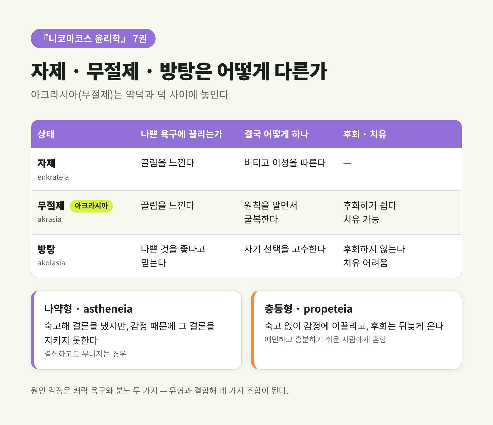
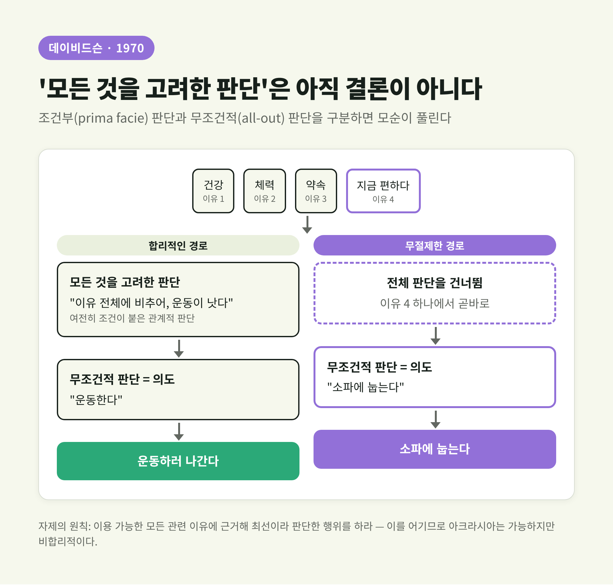
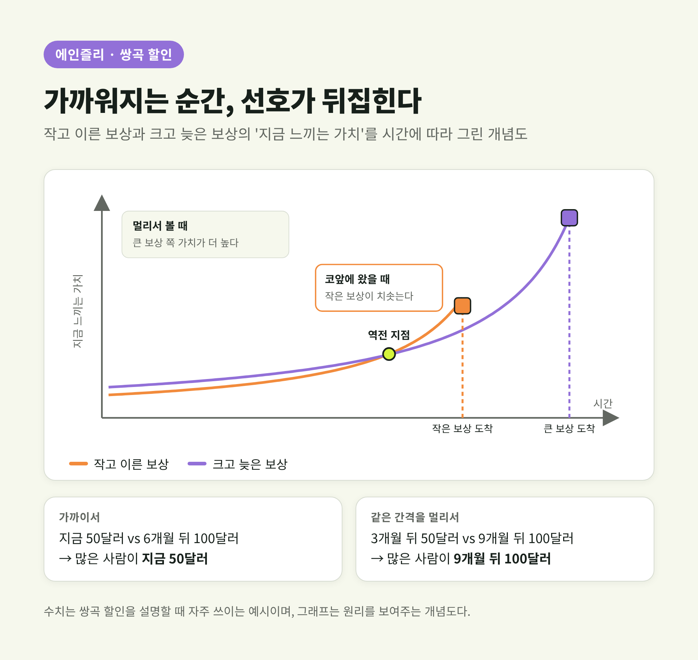
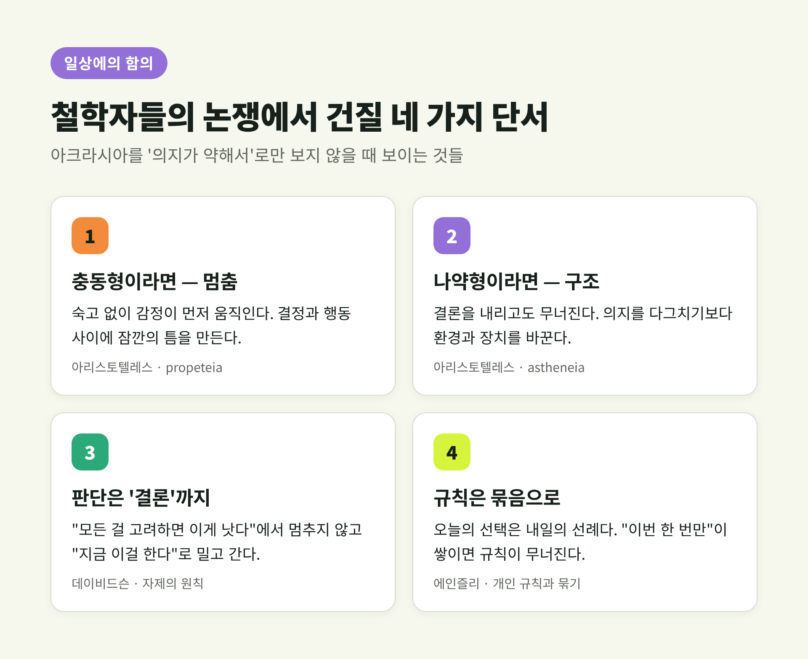

아크라시아(의지박약)의 철학 — 알면서도 왜 더 나쁜 쪽을 택할까

오늘은 '아크라시아', 우리말로 흔히 의지박약이라 부르는 현상을 철학의 눈으로 짚어 보려 합니다. 소크라테스에서 아리스토텔레스, 20세기의 데이비드슨, 그리고 시간 할인 이론까지 2,000년이 넘게 이어진 논쟁을 차례로 따라갑니다.
먼저 결론부터 요약하면 이렇습니다.
- 소크라테스는 "알면서 악을 행하는 사람은 없다"며 아크라시아 자체를 부정했습니다.
- 아리스토텔레스는 '가지고 있으나 쓰지 않는 앎'이라는 개념으로 그 존재를 인정하고, 충동형과 나약형을 나눴습니다.
- 데이비드슨은 '모든 것을 고려한 판단'과 '무조건적 판단'을 구분해, 아크라시아는 가능하지만 비합리적이라고 결론지었습니다.
■ 아크라시아란 무엇인가
아크라시아(akrasia)는 그리스어 ἀ-(없음)와 κράτος(힘, 지배)를 합친 말입니다. 글자 그대로 '자기 지배의 결여'입니다. 반대말은 엥크라테이아(enkrateia), 즉 자제입니다.
스탠퍼드 철학 백과사전(SEP)은 이를 이렇게 정의합니다. 자유롭고 의도적으로, 자신의 '더 나은 판단'에 반해 행위하는 것.
여기서 '더 나은 판단'은 옳은 판단을 뜻하지 않습니다. 본인이 따져 보고 "전체적으로는 이쪽이 낫다"고 내린 판단입니다.
야식을 먹지 않는 편이 낫다고 판단합니다. 그리고 라면을 끓입니다. 누가 강요한 것도, 판단이 바뀐 것도 아닙니다.
이것이 왜 철학의 문제일까요. 우리는 자유로운 행동이 그 사람의 평가를 반영한다고 기대합니다. 판단과 행동이 정면으로 갈라지는 장면은, 그 기대를 무너뜨립니다.
■ 소크라테스 — "아무도 알면서 악으로 가지 않는다"
논쟁의 출발점은 플라톤의 대화편 『프로타고라스』입니다. 대중은 흔히 "쾌락에 졌다"고 말합니다. 앎이 있어도 욕망이 그것을 노예처럼 끌고 다닌다는 생각입니다.
소크라테스는 이 설명을 받아들이지 않았습니다. 러브(W. R. M. Lamb)의 영역에 따르면 그의 결론은 이렇습니다. "아무도 자진해서 악이나 악이라고 생각하는 것을 향해 가지 않는다." 그것은 "인간 본성에 있지 않은 일"이라는 것입니다.
그렇다면 '쾌락에 진다'는 것은 무엇일까요. 소크라테스의 답은 무지입니다. 그것도 "가장 큰 정도의 무지"입니다.
그가 내놓은 처방은 측량술입니다. 가까이 있는 물건이 크게 보이듯, 눈앞의 쾌락은 실제보다 크게 보입니다. 쾌락과 고통의 넘침과 모자람을 정확히 재는 앎이 있다면, 더 작은 쾌락을 고르는 실수는 일어나지 않는다는 논리입니다.

이 입장은 단순하지만 날카롭습니다. 다만 아쉬운 점도 분명합니다. 쾌락의 크기와 좋음을 같은 저울에 올린다는 전제에 크게 기대고 있고, 무엇보다 우리의 경험과 맞지 않습니다.
■ 아리스토텔레스 — 가지고 있으나 쓰지 않는 앎
아리스토텔레스는 『니코마코스 윤리학』 7권에서 이 문제를 정면으로 다룹니다. 그의 첫마디는 냉정합니다. 소크라테스의 견해는 "관찰된 사실과 명백히 어긋난다"는 것입니다.
그렇다고 소크라테스를 버리지는 않습니다. 그는 앎을 둘로 나눕니다. 앎을 '가지고 있는' 상태와, 그것을 '쓰고 있는' 상태입니다.
그가 든 비유는 지금 읽어도 생생합니다. 잠든 사람, 미친 사람, 술 취한 사람. 막 공부를 시작해 문장은 이어 붙이지만 아직 알지 못하는 학생. 무대 위에서 대사를 읊는 배우. 모두 아는 사람의 말을 할 수는 있지만, 그 순간 정말로 알지는 못합니다.
실천적 삼단논법이 끊기는 자리
이 구조는 실천적 삼단논법으로 더 정확히 드러납니다.
- 보편 전제: 단 것은 맛보아야 한다. (또는 몸에 해로운 것은 피해야 한다.)
- 개별 전제: 이것은 달다.
- 결론: 맛본다.
아크라시아에 빠진 사람에게도 "해로운 것은 피해야 한다"는 보편 전제는 있습니다. 그런데 욕망은 "단 것은 즐겁다, 이것은 달다"라는 다른 추론을 움직입니다. 문제의 지점은 아리스토텔레스가 말한 "마지막 전제", 곧 지각 대상에 관한 판단입니다. 눈앞의 이것을 올바른 보편 원칙 아래 제대로 쥐지 못하는 것입니다.

그래서 아리스토텔레스는 결국 이렇게 인정합니다. "소크라테스가 세우려 했던 입장이 실제로 따라 나오는 것처럼 보인다." 행위하는 순간 온전한 앎은 없으니, 어떤 의미에서는 알고 어떤 의미에서는 모른다는 것입니다. 다만 그는 감정이 이성과 겨루고, 이성의 날을 무디게 하거나, 아예 우회할 수 있다고 보았습니다. 동의는 어디까지나 부분적입니다.
충동형과 나약형
아리스토텔레스는 아크라시아를 두 갈래로 나눕니다.
- 나약형(astheneia): 숙고해서 결론을 내렸지만, 감정 때문에 그 결론을 지키지 못합니다.
- 충동형(propeteia): 아예 숙고하지 않고 감정에 이끌립니다. 행위하는 순간엔 갈등이 없고, 뒤늦게 후회가 찾아옵니다. 그는 예민하고 흥분하기 쉬운 사람이 특히 이 형태를 겪는다고 적었습니다.
원인이 되는 감정은 두 가지, 쾌락에 대한 욕구와 분노입니다. 그러니 조합은 넷이 됩니다. 분노에 대해서는 다 듣기도 전에 뛰어나가는 성급한 하인에 빗대기도 했습니다.
흥미로운 점이 하나 더 있습니다. 아크라시아는 강한 정념에만 무너지는 것이 아닙니다. 대부분의 사람이 다스릴 만한 약한 정념에도 무너질 수 있다고 그는 말합니다.

방탕과는 다르다
아리스토텔레스는 무절제한 사람과 방탕한 사람을 선명하게 구분합니다. 방탕한 사람은 나쁜 것을 좋다고 믿고 선택합니다. 그래서 후회하지 않고, 치유하기 어렵습니다. 무절제한 사람은 올바른 원칙을 가진 채 어깁니다. 그래서 후회하기 쉽고, 치유할 수 있습니다.
그는 이를 도시에 빗댑니다. 무절제한 사람은 "옳은 법령을 모두 통과시키고 좋은 법을 갖추었지만, 그 법을 전혀 쓰지 않는 도시"와 같다고 했습니다.
■ 데이비드슨 — '모든 것을 고려한 판단'은 아직 결론이 아니다
2,000년 넘게 지나, 이 문제를 새로 짠 사람이 도널드 데이비드슨입니다. 그의 논문 「의지박약은 어떻게 가능한가(How is Weakness of the Will Possible?)」는 1970년 논문으로 인용됩니다. 1969년을 초판으로 적는 자료도 있습니다.
데이비드슨은 그럴듯한 세 명제가 서로 부딪힌다는 데서 시작합니다.
- P1: x를 y보다 더 원하고 둘 다 할 수 있다고 믿으면, 의도적으로 하나를 할 때 x를 한다.
- P2: x가 y보다 낫다고 판단하면, x를 y보다 더 원한다.
- P3: 그런데 무절제한 행위는 존재한다.
앞의 둘을 받아들이면 셋째는 불가능해 보입니다. 데이비드슨은 셋을 모두 지키는 길을 찾았습니다.
두 종류의 판단
열쇠는 판단의 형식입니다.
조건부(prima facie) 판단은 "이런 이유에 비추어 보면 a가 b보다 낫다"는 형식입니다. 여러 이유를 모아 "모든 것을 고려하면 a가 낫다"고 말해도, 여전히 '고려사항 전체에 비추어'라는 조건이 붙어 있습니다. 관계를 말할 뿐, 행동을 명령하지는 않습니다.
무조건적(all-out) 판단은 그냥 "a가 낫다"입니다. 데이비드슨은 이것을 의도와 같은 것으로 보았습니다. P1과 P2가 말하는 판단은 바로 이 무조건적 판단입니다.
이렇게 보면 모순이 풀립니다. 무절제한 사람은 '모든 것을 고려하면 운동이 낫다'는 조건부 판단을 갖고 있습니다. 그러나 실제 행동을 이끈 무조건적 판단은 '지금 소파가 편하다'는 일부 이유에서 나왔습니다. SEP는 이를 탐정 포아로에 빗댑니다. 모든 증거가 한 용의자를 가리킨다고 판단하면서도, 아직 유죄라고 결론 내리지는 않는 상태입니다.

가능하지만 비합리적이다
그렇다면 무엇이 잘못일까요. 데이비드슨은 '자제의 원칙'을 제시합니다. 이용 가능한 모든 관련 이유에 근거해 최선이라고 판단한 행위를 하라는 원칙입니다. 귀납 추론에서 모든 증거를 고려하라는 원칙과 닮았습니다.
무절제한 사람은 이 원칙을 어깁니다. 그래서 그는 자신의 행동에서 "본질적으로 불합리한 무엇"을 보게 됩니다. 아크라시아는 가능합니다. 다만 언제나 비합리적입니다.
■ 그 뒤의 논쟁 — 판단, 결심, 그리고 시간
데이비드슨 이후 논의는 여러 방향으로 갈라졌습니다.
먼저 반론입니다. 브랫먼은 술을 마시며 "끊는 게 최선이라고 생각해. 그래도 마시고 있어"라고 말하는 사람을 예로 듭니다. 이 사람은 무조건적 판단에 이르고도 어긴 것처럼 보입니다. 오스틴은 우리가 유혹에 "차분하게, 심지어 능숙하게" 넘어간다고 지적했습니다. 늘 격정에 휩쓸리는 것은 아니라는 뜻입니다.
반대 방향의 질문도 있습니다. 아팔리 같은 철학자는 '더 나은 판단' 자체가 틀릴 수 있다고 봅니다. 판단으로는 화학 박사과정을 계속해야 한다고 여기면서 그만둔 사람이, 실은 가장 이유 있는 선택을 했을 수도 있다는 것입니다.
홀턴 — 의지박약은 '결심'의 문제
리처드 홀턴은 아예 주제를 옮겼습니다. 일상에서 말하는 의지박약은 아크라시아와 다르다는 것입니다.
아크라시아는 지금의 평가 판단과 행동이 충돌하는 일입니다. 의지박약은 미리 세워 둔 결심을, 바로 그 결심이 막으려던 유혹 때문에 부당하게 철회하는 일입니다. 홀턴은 결심을 "반대 성향을 이기기 위한 의도"라고 불렀습니다.
예전엔 '판단과 행동의 순간적 어긋남'이 중심이었습니다. 홀턴 이후로는 '시간을 건너 결심을 지키는 능력'이 함께 다뤄집니다.
채식을 결심하고 번번이 실패하는 사람은 의지박약입니다. 애초에 결심한 적이 없는 사람은 아닙니다. 좋은 이유로 결심을 바꾸는 것도 의지박약이 아닙니다.
에인즐리 — 가까운 보상은 크게 보인다
심리학자 조지 에인즐리는 시간 할인으로 이 문제를 설명합니다. 사람은 미래의 보상을 일정한 비율이 아니라 쌍곡선 모양으로 깎아 봅니다. 보상이 가까워질수록 가치가 급격히 치솟고, 그 순간 선호가 뒤집힙니다.
예시로 자주 쓰이는 수치는 이렇습니다. 많은 사람이 6개월 뒤 100달러보다 지금 50달러를 고릅니다. 그런데 3개월 뒤 50달러와 9개월 뒤 100달러 중에서는 100달러를 고릅니다. 간격은 똑같이 6개월입니다. 멀리서 보느냐, 코앞에서 보느냐만 다릅니다. 이런 선호 역전은 쥐와 비둘기에게서도 먼저 관찰되었습니다.

어딘가 낯익지 않으신가요. 소크라테스가 말한 '가까이 있으면 크게 보이는 착시'와 구조가 겹칩니다. 다만 소크라테스는 그것을 무지라고 불렀고, 에인즐리는 사람에게 기본으로 장착된 평가 방식으로 보았습니다.
에인즐리의 처방은 '시점 간 협상'입니다. 지갑을 배우자에게 맡기거나 금연을 공개 선언하는 외부 구속이 있습니다. 세이렌 앞에서 몸을 돛대에 묶은 율리시스처럼요. 더 중요한 것은 개인 규칙입니다. 선택을 하나씩이 아니라 묶음으로 보는 것입니다. "오늘 한 잔"이 아니라 "밤 9시 전엔 마시지 않는 삶"을 고르는 식입니다. 지금의 선택이 미래의 선례가 되기 때문에, "이번 한 번만"이 쌓이면 규칙이 무너집니다.
■ 동양의 응답, 한 문단만
이 블로그에서 다룬 왕양명의 지행합일과도 잠시 견주어 볼 만합니다. 왕양명은 "알면서 행하지 않는 사람은 지금껏 없었다"고 했습니다. 행하지 않았다면 아직 참으로 안 것이 아니라는 뜻입니다. SEP는 표절을 알면서 저지른 학생을 예로 듭니다. 아리스토텔레스와 주희는 학생의 "알고 있었다"는 말을 받아들이지만, 왕양명은 그 앎을 부정합니다. 결론만 보면 소크라테스에 가깝습니다. 다만 소크라테스가 계산의 오류를 말했다면, 왕양명은 몸으로 체득하지 못한 앎을 말했다는 점이 다릅니다.
■ 일상에서 무엇을 가져갈 수 있을까
철학자들의 논쟁을 일상으로 옮기면 몇 가지 단서가 남습니다.

첫째, 자신이 어느 유형인지 살펴보는 일입니다. 화가 나 말을 뱉고 후회한다면 충동형에 가깝습니다. 이때는 숙고할 틈, 곧 잠깐의 멈춤이 필요합니다. 결심하고도 무너진다면 나약형입니다. 의지만 다그치기보다 환경을 바꾸는 편이 낫습니다.
둘째, "알긴 아는데"에서 멈추지 않는 일입니다. 데이비드슨식으로 말하면, '모든 걸 고려하면 이게 낫다'는 조건부 판단을 '지금 이걸 한다'는 무조건적 판단으로 끝까지 밀고 가야 합니다.
셋째, 예외를 경계하는 일입니다. 에인즐리의 말처럼 오늘의 선택은 내일의 선례입니다. 결심은 낱개가 아니라 묶음으로 지켜집니다.
물론 한계도 있습니다. SEP는 순간의 저항보다 시간을 건너는 조절과 외부의 비계가 더 도움이 될 수 있다는 경험 연구를 소개합니다. 다만 이런 처방이 모든 경우에 통한다는 보장은 없습니다. 중독을 특수한 아크라시아로 볼지, 전혀 다른 현상으로 볼지에 대해서도 학자들의 의견이 엇갈립니다.
정리하면 이렇습니다. 소크라테스는 아크라시아를 부정했고, 아리스토텔레스는 그것을 '쓰지 않는 앎'으로 설명했으며, 데이비드슨은 '아직 결론에 이르지 않은 판단'으로 풀었습니다.
세 사람이 공통으로 가리키는 곳은 하나입니다. "안다는 것은 머릿속에 정답을 갖는 일이 아니라, 결정의 순간에 그 정답을 쥐고 있는 일이다."
오늘 밤 다시 라면 앞에 선다면, 저는 그것을 실패라기보다 아리스토텔레스가 말한 '치유할 수 있는 상태'의 증거로 읽겠습니다. 후회할 수 있다는 것은, 아직 좋은 법을 가진 도시라는 뜻이니까요.
참고자료
- Stanford Encyclopedia of Philosophy, "Weakness of Will" (2025 개정)
- Stanford Encyclopedia of Philosophy, "Weakness of Will" 2012 겨울판
- Stanford Encyclopedia of Philosophy, "Aristotle's Ethics" — Akrasia
- Aristotle, Nicomachean Ethics Book VII (W. D. Ross 역, MIT Internet Classics Archive)
- Plato, Protagoras 357–362 (W. R. M. Lamb 역, Perseids)
- Plato, Protagoras (B. Jowett 역, Project Gutenberg)
- MIT OpenCourseWare 24.120 Moral Psychology, Lecture VI "Akrasia"
- Notre Dame Philosophical Reviews, Ainslie 『Breakdown of Will』 서평
- Notre Dame Philosophical Reviews, Holton 『Willing, Wanting, Waiting』 서평
- Philosophy Now 112호, "Akrasia: Why Do We Act Against Our Better Judgement?"
- Wikipedia, "Akrasia"
- Wikipedia, "Hyperbolic discounting"
- Stanford Encyclopedia of Philosophy, "Wang Yangming"